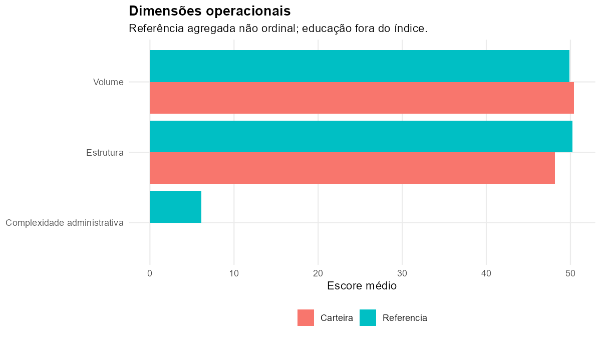
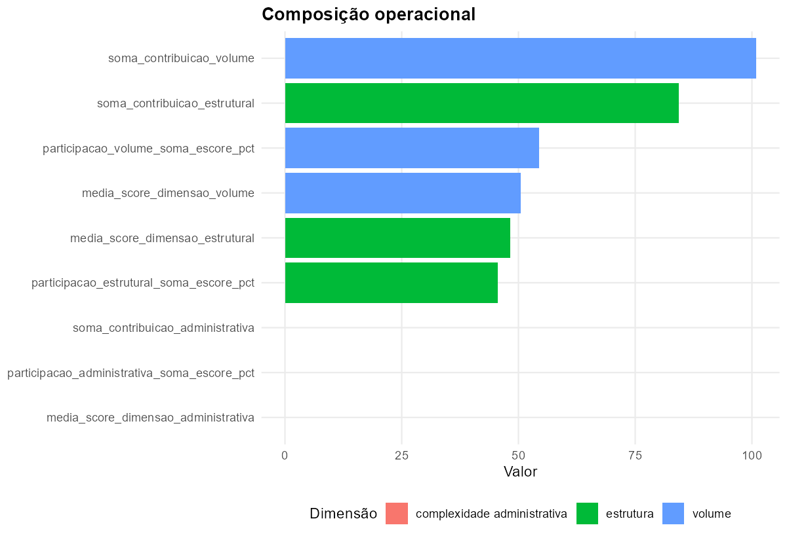
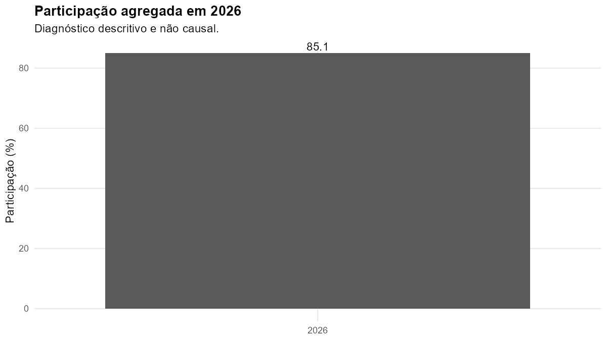

Carteira de Amanda
Volume e carga operacional
Carga operacional total
185,2
Diferença para referência
-2,7
A referência é agregada e não ordinal. O índice não equivale à carga real total e não permite, isoladamente, afirmar sobrecarga ou subutilização.

Composição operacional

Diagnóstico educacional contextual

Os resultados educacionais são descritivos, observacionais e sujeitos a diferenças de participação e composição. Não integram o índice operacional, não representam efeito do assessoramento e não avaliam o desempenho da assessora.
Escolas da carteira
| ID | Escola | INEP | Vínculo administrativo | Índice | Volume | Estrutura | Administração | Ficha |
|---|
| ESC_015 | EMEF GABRIEL OBINO | 43109233 | amanda | 19,7 | 35,1 | 16,2 | 0,0 | abrir ficha |
| ESC_029 | EMEF MORADAS DA HIPICA | 43293069 | amanda | 51,8 | 65,0 | 73,8 | 0,0 | abrir ficha |
| ESC_032 | EMEF NOSSA SENHORA DE FATIMA | 43105513 | amanda | 31,5 | 50,8 | 31,8 | 0,0 | abrir ficha |
| ESC_033 | EMEF NOSSA SENHORA DO CARMO | 43204643 | amanda | 45,3 | 54,9 | 66,6 | 0,0 | abrir ficha |
| ESC_042 | EMEF PROF LARRY JOSE RIBEIRO ALVES | 43109098 | amanda | 36,9 | 46,3 | 52,4 | 0,0 | abrir ficha |
Execução 20260730_212403 — módulo 20.